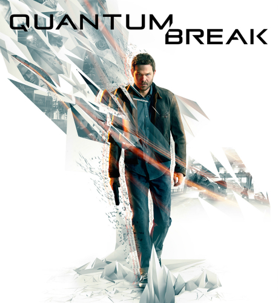
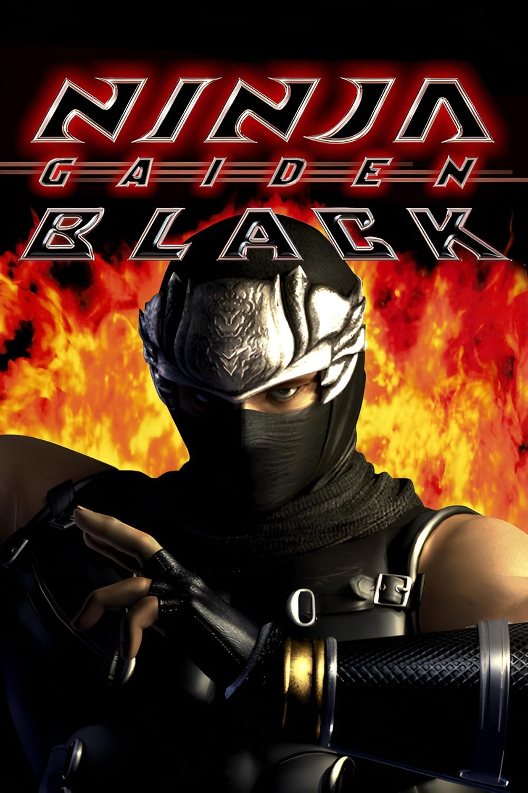
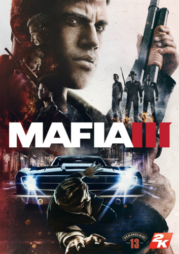
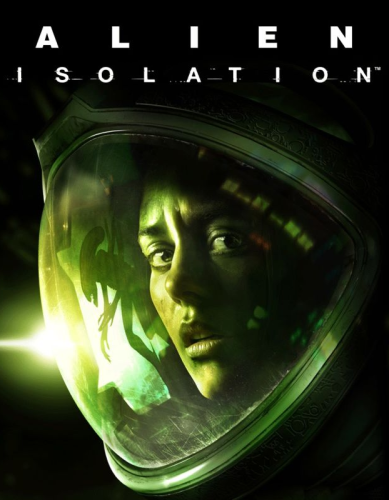
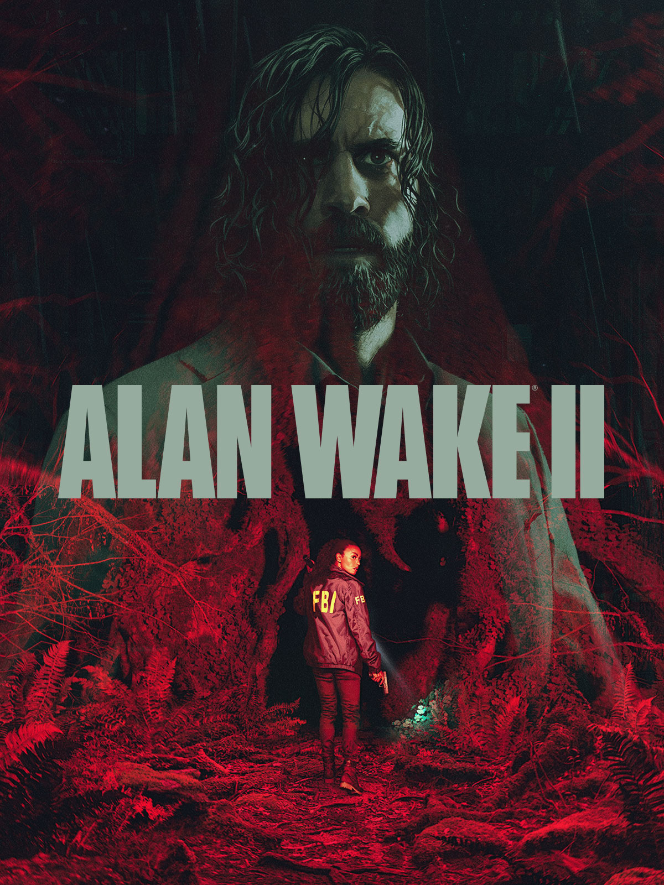
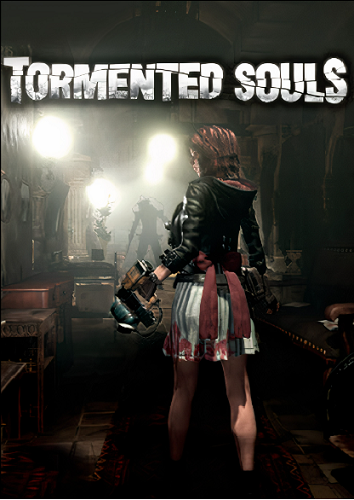
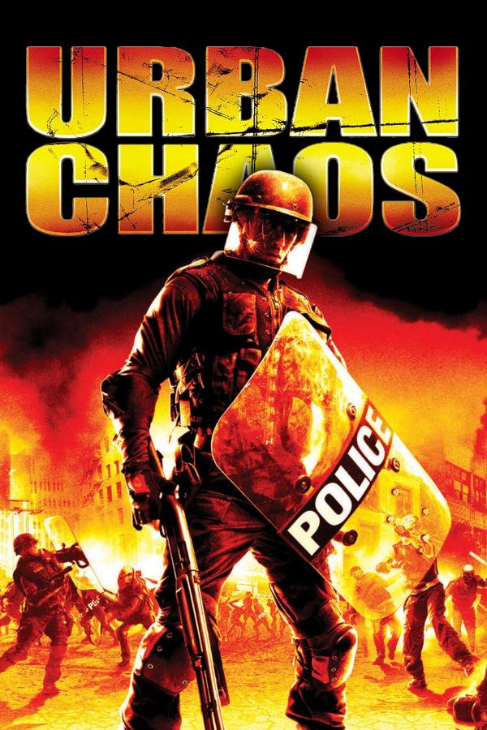
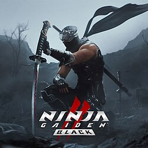
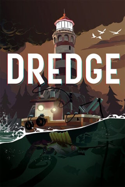

jogos zerados 2025
Assassins Creed 4 Black Flag
Zerei no dia 18 de Janeiro, levei em torno de 20 horas de gameplay, tambem joguei sua DLC, maior qualidade desse jogo é o desenvolvimento do personagem principal: Edward Kenway, junto com a sua jogabilidade prazerosa, a possibilidade de utilizar 4 pistolas te dá a sensação que você é imbativel. O maior defeito do jogo é sem dúvida sua dublagem que as vezes é boa, mas na maior parte do tempo, é bem inferior ao seu antecessor (AC 3) e o seu sucessor (AC Rogue), além de te limitar a carregar apenas espadas de 2 mãos, ainda dá pra usar outras armas pegas do chão, mas você perde elas assim que esbarra em alguem ou escala alguma parede.

nota do jogo: 10
Plataformas disponíveis:
Xbox 360, Xbox One, Xbox Series S/X, PS3, PS4, PS5, Nintendo WII U, PC
Quantum Break
Zerei no dia 27 de Janeiro, levei 8 horas de gameplay, sua maior qualidade são os poderes que o protagonista, Jack Joice, possue, tornando a gameplay muito variada e divertida, o ponto mais baixo desse jogo é a sua duração de apenas 8 horas, pois, por mais que esse jogo tenha uma gameplay divertida, metade desse tempo você vai passar assistindo cutscenes ou interagindo com o cenario e personagens, fora que para entender a historia inteira, você precisa assistir uma serie que é intregrada ao jogo, cada capitulo que você completa, libera um episodio de 40 minutos da serie, quebrando completamente o ritmo do jogo.
nota do jogo: 7,5
Plataformas disponíveis:
Xbox One, Xbox Series S/X, PC
Ninja Gaiden Black
Zerei no dia 08 de Fevereiro com 15 horas de gameplay, sua maior qualidade é o combate extremamente variado e complexo, podendo utilizar varias armas e magias diferentes, seu maior defeito é a dificuldade artificial, o jogo coloca partes extremamente dificieis desnecessárias, frustrando bastante quem joga, na parte final do jogo, ele não te dá nenhum local para comprar itens de cura e nem avisa que isso não será mais possivel, se você não tiver feito dois saves, provavelmente ficará preso nessa parte ou vai demorar muito mais tempo para passar.
nota do jogo: 8
Plataformas disponíveis:
Xbox, Xbox 360, Xbox One, Xbox Series S/X
Mafia 3
Zerei no dia 14 de Fevereiro com 25 horas de gameplay, sua maior qualidade é sua gameplay de tiro que é bem satisfatoria e suas finalizações brutais que são bem variadas e legais de assistir, seu maior defeito é ser extremamente repetitivo, daria pra cortar metade do jogo fora sem problema nenhum, os três parceiros do Lincon (com exceção do Vito) são muito qualquer coisa, você até esquece da existência deles, tambem não ajuda o fato das missões secundarias de cada um serem mais repetitivas que as missões principais
nota do jogo: 7
Plataformas disponíveis:
PS4, PS5, Xbox One, Xbox Series S/X, PC
A Way Out
Zerei no dia 03 de Março junto com o Luan, levamos 8 horas para zerar e platinar, sua maior qualidade é são os momentos que os jogadores tem que se ajudar, seja subindo uma parede juntos, ou até fugindo da prisão, o jogo tambem consegue fazer com que a gente se importe com os 2 personagens, tornando o final do jogo de explodir cabeças, seu maior defeito é sua gameplay de tiro que acontece nos momentos finais do jogo, parece que os inimigos são feitos de papel.

nota do jogo: 9
Plataformas disponíveis:
Xbox one, Xbox Series S/X, PS4, PS5, PC
Alien Isolation
Zerei no dia 08 de Março com 20 horas de gameplay, a maior qualidade desse jogo é a inteligência artificial do Alien, ela te persegue e te aterroriza durante todo o jogo, o alien consegue te deixar tenso até quando não está em cena, o seu maior defeito é ser longo e o gerenciamento de itens, você não tem como expandir o espaço de sua mochila ou modificar suas armas, a única coisa que dá pra fazer é encontrar projetos de arremessáveis melhores, tipo uma bomba de fumaça que dura mais tempo ativa, etc.
nota do jogo: 8,5
Plataformas disponíveis:
Xbox 360, Xbox one, Xbox Series S/X, PS3, PS4, PS5, Nintendo Switch, PC
Alan Wake 2
Zerei no dia 24 de Março, levei em torno de 30 horas de gameplay, sua maior qualidade é o enredo que te prende do início ao fim, somado com os gráficos impecáveis e a trilha sonora de alta qualidade, o fato de o jogo possibilitar jogar a campanha dos dois personagens na ordem que você quiser é muito bom, não deixando a gameplay ficar repetitiva, aliás, a gameplay entre as duas campanhas varia bastante, com o Alan você vê algo mais de terror psicológico e algumas maluquice, com a Saga é algo mais investigativo e "pé no chão".
nota do jogo: 10
Plataformas disponíveis:
Xbox Series S/X, PS5, PC
Grounded
Platinei no dia 12 de Abril junto com o Luan, temos mais de 100 horas de gameplay juntando todos os saves, sua maior qualidade é a progressão muito bem feita juntamente com o jardim, que é o local do qual o jogo se passa, que contem vários segredos, chefões secretos, armas desbloqueáveis, etc. Esse jogo é extremamente divertido quando jogado com outras pessoas, pórem, sozinho talvez você passe por algum perrengue, por mais que os inimigos fiquem com menos vida quando você joga sozinho, com duas ou mais pessoas é bem mais fácil carregar itens, batalhar contra os insetos, construir sua base.

nota do jogo: 10
Plataformas disponíveis:
Xbox One, Xbox Series S/X, PS4, PS5, Nintendo Switch, PC
Tormented Souls
Zerei no dia 08 de Abril com 9 horas de gameplay, sua maior qualidade é a atmosfera criada juntamente com os puzzles extremamente criativos, que são dos mais diversos tipos, desde ver uma senha em um papel, até entrar em outra realidade para que certa ação seja realizada, seu ponto mais baixo é o combate, o jogo tem apenas 4 tipos de inimigos que vão ser repetidos até o fim do jogo.
nota do jogo: 9
Plataformas disponíveis:
Xbox One, Xbox Series S/X, PS4, PS5, Nintendo Switch, PC
Urban Chaos
Zerei no dia 11 de Abril com 6 horas de gameplay, sua maior qualidade é a variação de inimigos e as formas de combate-los, podendo utilizar várias armas de fogo e corpo, maior defeito é a sua performance na versão de PS2 (versão que eu joguei).
nota do jogo: 8
Plataformas disponíveis:
Xbox, PS2
Ninja Gaiden Black 2
Zerei no dia 29 de Abril com 11 horas de gameplay, sua maior qualidade é a dificuldade que foi melhor executada que no primeiro jogo e seu combate que ficou mais dinâmico e divertido, agora os inimigos perdem os membros com os seus golpes e você pode finalizá-los com o golpe forte de qualquer arma, facilitando muito quando existem muitos inimigos na tela, seu maior defeito é sua parte final que é MUUUIIIITOOO corrida e mal feita.
nota do jogo: 7
Plataformas disponíveis:
Xbox Series S/X, PS5, PC
Clair Obscure Expedition 33
Platinei no dia 21 de Maio com 44 horas de gameplay, suas maiores qualidades são seu enredo, que te prende do início ao fim, seu combate, que mesmo sendo de turno é interessante, a direção de arte é magnifica, é incrível o que os DEVs conseguiram fazer com pouco recurso, e por último a trilha sonora presente durante todo o jogo, a trilha sonora desse jogo contém mais de 150 músicas, uma melhor que a outra, uma coisa muito boa que esse jogo tem que não é muito comum dos jogos do mesmo genero, é que os encontros com os inimigos não são aleatórios, com você podendo avista-los e até mesmo ataca-los antes da luta de verdade começar.

nota do jogo: 10
Plataformas disponíveis:
Xbox Series S/X, PS5, PC
Dredge
Zerei no dia 27 de Maio com 11 hoas de gameplay, sua maior qualidade é sua gameplay relaxante e seu plot twist no final do jogo, seu maior defeito é ser limitado na gameplay, se resumindo apenas ao barquinho, não tendo outros tipos de barcos para utilizar, outra coisa zoada é que para pescar todo tipo de peixe você só tem duas maneiras de fazer: chegando perto da area de pesca e apretando A, ou colocando um covo e esperando o tempo passar, seria interessante se tivesse uma mecânica de pescar peixes maiores utilizando um arpão ou algo do tipo.
nota do jogo: 8
Plataformas disponíveis:
Xbox One, Xbox Series S/X, PS4, PS5, Nintendo Switch, Android, PC
GTA Vice City: The Definitive Edition
Platinei no dia 10 de Junho com 44 horas de gameplay, as qualidades desse jogo são as mais diversas possíveis, mapa bem feito e marcante, protagonista memorável e personagens secundários interessantes, muitos veículos novos em comparação com seu antecessor (GTA 3), a inclusão da iluminação clássica fez total diferença na vibe dos anos 80 que o jogo se passa, poder comprar e gerenciar propriedades é o grande trunfo desse jogo, você pode escolher a ordem das missões depois de um certo ponto, desde que você tenha o dinheiro necessário para comprar a propriedade daquela missão, algo que eu sinto falta nesse jogo é o mapa marcar as propriedades que são compráveis (elas ficam marcadas depois que você compra, mas antes não), pois elas são essenciais para finalizar o jogo.

nota do jogo: 10
Plataformas disponíveis:
Xbox One, Xbox Series S/X, PS4, PS5, Nintendo Switch, PC